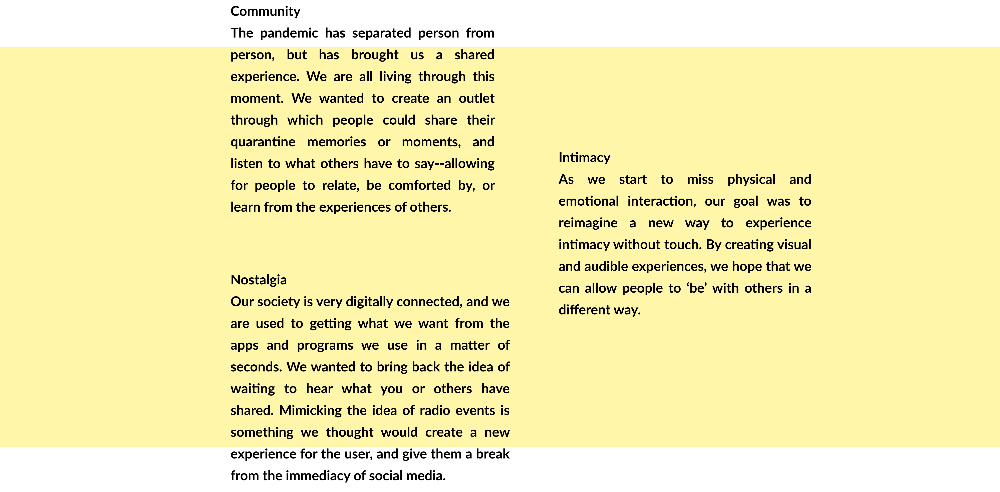

Scheduled Radio
Feeling nostalgic? Eagerly wait for your audio to be played at a specific time on the Intimo radio as it will begin playing at a set time on a specific day.


Concept Statement
Intimo is an online radio experience that employs user-generated sound bites to help people connect. Private listening on headphones is a way to experience intimacy during mandated social distancing. Our interface gives users a way to share snippets of audio while socially distant.
The Team
This was a team effort in which I mostly focused on building the site and generating the background. Together we came up with the idea and mapped out what the experience would flow like.
We made this project at the start of quarantine 2020 and had a few things in mind while working on it.
Key Features
Scheduled radio, a generative background, a built-in recorder, and our archive are all core features of Intimo that aim to connect the user to others experiencing the same thing (quarantine).
Scheduled Radio
Feeling nostalgic? Eagerly wait for your audio to be played at a specific time on the Intimo radio as it will begin playing at a set time on a specific day.

Generative Background
The background is generated based on the weather of the zipcode the user chooses to input, allowing them to see and ‘feel’ the environment of another.
Built-In Recorder
No need to use a third-party recording function. Our platform has a built in recording service to let you record in real time.


Archive
Explore through the Intimo sound archive and listen to a short glimpse of how others are spending their quarantine.
Tools and Resources
Radio.co was used for streaming. P5.js was used with the Open Weather Maps API to generate the background. Simple Recorder JS was used for our built in recorder system.
isabelanguera2@gmail.com
(434) 907-2508